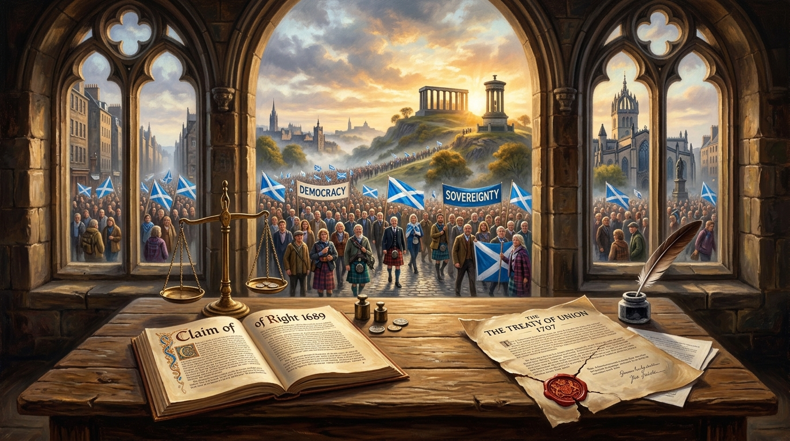

Scotland: Sovereignty and the Democratic Road to Independence.
An Examination of Popular Sovereignty, the Claim of Right, and the Four Pillars of Peaceful Democratic Legitimacy.

“If sovereignty ultimately belongs to the people, then the people must possess a peaceful and practical means of determining their constitutional future.” — Trevor Swistchew
Constitutional Dossier: Popular Sovereignty & Self-Determination
The 1989 Claim of Right, International Law, and the Four Democratic RequirementsThe Distinct Scottish Constitutional Tradition
Unlike the English doctrine of the absolute sovereignty of the Crown in Parliament, Scots constitutional jurisprudence has historically derived sovereignty from the people. In 1989, this principle was ratified in the Claim of Right for Scotland, declaring the sovereign right of the Scottish people to determine their government. Under the United Nations Charter (Article 1(2)) and the ICCPR (Article 1(1)), all peoples possess the inalienable right of self-determination, setting up an unresolved tension against the UK’s current unitary UN representation.
The constitutional future of Scotland remains one of the most significant political questions facing the people of Scotland. At its heart lies a simple issue: if a people regard themselves as a distinct nation, should they possess a peaceful and effective democratic means of determining their constitutional future?
Pre-1707, Scotland existed as a recognised kingdom with its own Parliament, Crown, legal system and institutions.[1] The Act of Union of 1707 united the Kingdoms of Scotland and England into Great Britain.[2] The nature of the Union, the circumstances under which it was achieved, and its implications for sovereignty continue to be debated by historians, lawyers and political thinkers.
Supporters of Scottish independence argue that sovereignty in Scotland ultimately belongs to the people. While views differ, this principle received political expression in the Claim of Right for Scotland, signed in 1989 which recognised “the sovereign right of the Scottish people to determine the form of Government best suited to their needs”.[3]
The principle of self-determination also occupies an important place in international law. The United Nations Charter identifies respect for “the principle of equal rights and self-determination of peoples” as one of the purposes of the United Nations.[4]
Likewise, the International Covenant on Civil and Political Rights states:
“All peoples have the right of self-determination meaning they freely determine their political status and freely pursue their economic, social and cultural development.”[5]
These principles are significant because they establish that peoples possess rights concerning their political future. However, international law also recognises the territorial integrity of existing states. Consequently the United Nations currently recognises the United Kingdom of Great Britain and Northern Ireland as the sovereign Member State. Scotland is not separately represented as a Member State and is not listed by the United Nations as a Non-Self-Governing Territory.[6]
For some independence supporters, this represents an unresolved contradiction. They argue that a nation possessing its own legal system, institutions, history and national identity should also possess a democratic mechanism enabling it to choose its constitutional future. Others maintain that Scotland already exercises self-government within the United Kingdom.
Whatever position held, the fundamental democratic question remains unchanged:
If political legitimacy derives from consent, then consent must be capable of being expressed.
A peaceful democratic route to independence therefore rests not upon force but upon legitimacy.
No constitutional settlement can claim lasting legitimacy if it lacks the support of the people who live under it. Independence supporters must therefore seek public support through democratic participation, elections and public persuasion.
Claims concerning sovereignty, democratic authority, the Treaty of Union and the constitutional rights of the Scottish people should be subject to rigorous examination. Historical arguments are strongest when supported by evidence rather than rhetoric.
Public discussion, political organisation, constitutional conventions, citizens' assemblies and peaceful campaigning all contribute to the democratic process. Such activities help demonstrate whether constitutional change represents a sustained public desire rather than a temporary political preference.
Those who believe Scotland's constitutional status deserves greater international attention must continue presenting evidence and arguments before scholars, lawyers, journalists and international institutions. Recognition is rarely obtained by demand alone—it is secured through persistent persuasion.
This route may be slower than confrontation, but it possesses one overwhelming advantage: it preserves democratic legitimacy. Throughout history, constitutional disputes have often produced violence. Yet violence rarely resolves the questions that caused the conflict. Instead, it leaves societies burdened with grief and division. A democratic movement that seeks self-government should therefore seek methods consistent with the values it wishes to establish.
The strongest argument for Scottish independence is therefore not based upon hostility towards another nation. It is based upon a democratic principle:
The Inalienable Democratic Principle:
“If sovereignty ultimately belongs to the people, then the people must possess a peaceful and practical means of determining their constitutional future.”
— Trevor Swistchew • 2026
Whether that future lies within the United Kingdom or outside it is a matter for democratic choice.
The essential principle remains the same: No people should be permanently denied a peaceful democratic opportunity to express their constitutional will.
© 2026 Trevor Swistchew. All rights reserved.